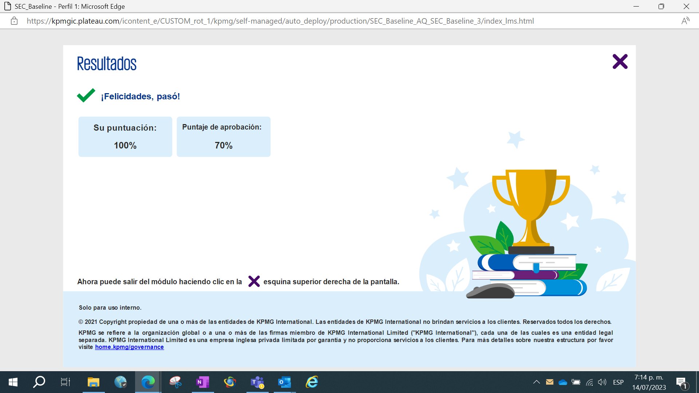
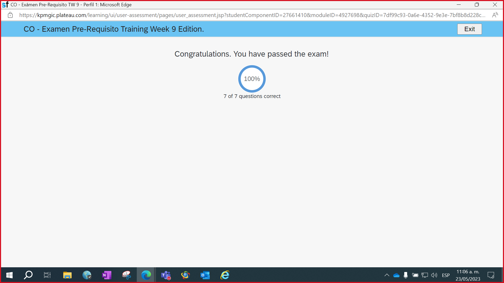

Ingeniero de Sistemas egresado del Área Andina y Auditor de TI en KPMG Colombia. Me especializo en el desarrollo backend seguro, la evaluación de riesgos tecnológicos (SOX/ICFR), ciberseguridad y auditoría bajo estándares ISO 27001.
Protegiendo e impulsando la infraestructura tecnológica del futuro.
Soy un Ingeniero de Sistemas apasionado por la seguridad, el desarrollo y la auditoría tecnológica. Con experiencia en el desarrollo backend en el sector bancario (Bancolombia) y en la evaluación de controles generales de TI (GITCs) y controles de aplicación para multinacionales en KPMG Colombia.
Mi enfoque combina la rigurosidad técnica de la ingeniería de software con las mejores prácticas de gobernanza de TI (COBIT, ITIL) y ciberseguridad, asegurando que los sistemas no solo sean eficientes, sino también seguros, auditables y conformes con regulaciones internacionales (SOX, PCAOB).
Años de Experiencia
Certificaciones
Repositorios Públicos
Seguidores / Contactos
KPMG Report Manager es una herramienta especializada diseñada para la automatización, procesamiento y generación de reportes e informes de auditoría de TI. Optimiza los tiempos de análisis mediante scripts inteligentes de control de calidad de datos.
Este panel demuestra de forma práctica mis conocimientos en auditoría de TI y ciberseguridad, monitoreando en tiempo real las políticas y controles aplicados a este portafolio.
Prevención de Inyección de Código (Cross-Site Scripting). Los datos externos de GitHub y certificaciones se inyectan usando enlaces de texto plano o bindings seguros del DOM.
Control de Cambios automatizado (ITIL). Despliegues continuos auditados mediante GitHub Actions que validan la firma de confirmación y el empaquetado seguro.
Cifrado de datos en tránsito. Evaluación del protocolo activo. En producción se requiere HTTPS con TLS 1.3 para prevenir ataques de intermediario (MITM).
Privacidad de datos de usuario. No se utilizan cookies de seguimiento ni scripts de terceros invasivos, cumpliendo con regulaciones GDPR e ISO 27001.
Control de lanzamiento continuo mediante integración Git-Vercel. Verifica compilación estática, HTTPS automático y reversiones automáticas ante incidentes.
Gobernanza de datos. Permite la integración segura de consultas mediante API Keys encriptadas con políticas RLS (Row Level Security) activas.

Aprobación al 100% del examen obligatorio de Fundamentos de Seguridad.

Calificación perfecta (7/7 correctas) en la prueba técnica.
+57 311 8287430